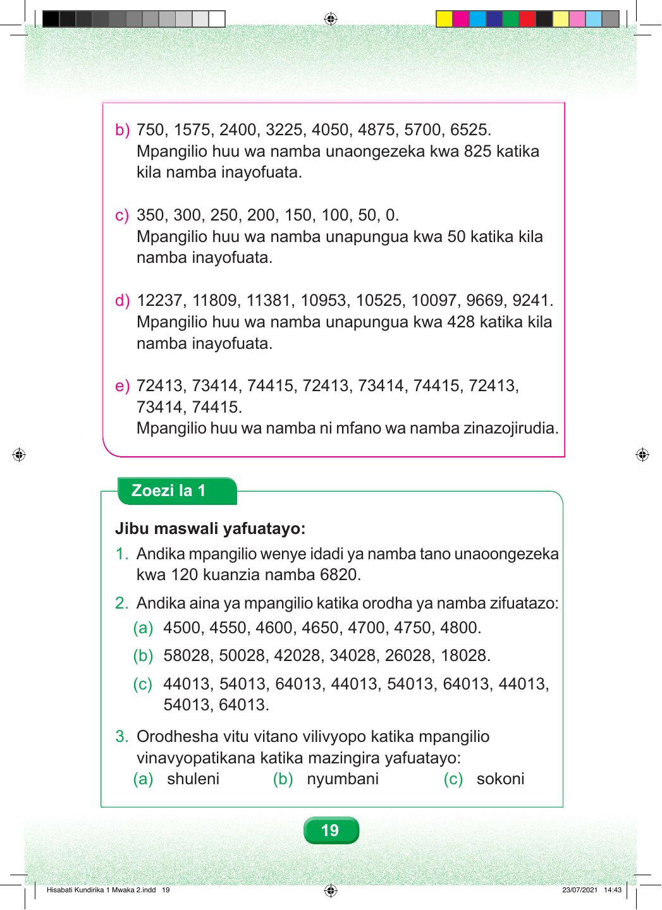

b) 750, 1575, 2400, 3225, 4050, 4875, 5700, 6525. Mpangilio huu wa namba unaongezeka kwa 825 katika kila namba inayofuata. c) 350, 300, 250, 200, 150, 100, 50, 0. Mpangilio huu wa namba unapungua kwa 50 katika kila namba inayofuata. d) 12237, 11809, 11381, 10953, 10525, 10097, 9669, 9241. Mpangilio huu wa namba unapungua kwa 428 katika kila namba inayofuata. e) 72413, 73414, 74415, 72413, 73414, 74415, 72413, 73414, 74415. Mpangilio huu wa namba ni mfano wa namba zinazojirudia. Zoezi la Kwanza Jibu maswali yafuatayo: Swali la kwanza. Andika mpangilio wenye idadi ya namba tano unaoongezeka kwa 120 kuanzia namba 6820. Swali la pili. Andika aina ya mpangilio katika orodha ya namba zifuatazo: Sehemu a. 4500, 4550, 4600, 4650, 4700, 4750, 4800. Sehemu b. 58028, 50028, 42028, 34028, 26028, 18028. Sehemu c. 44013, 54013, 64013, 44013, 54013, 64013, 44013, 54013, 64013. Swali la tatu. Orodhesha vitu vitano vilivyopo katika mpangilio vinavyopatikana katika mazingira yafuatayo: (a) shuleni (b) nyumbani (c) sokoni 19 Hisabati Kundirika 1 Mwaka 2.indd 19 23/07/2021 14:43